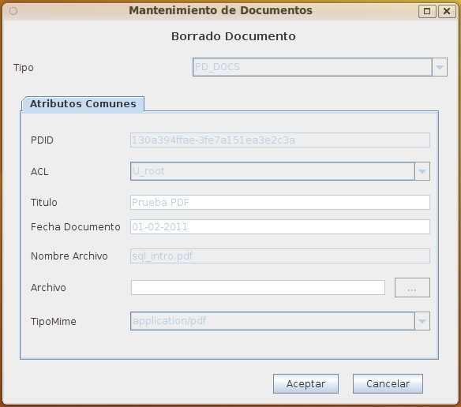

When select the option "documents->delete" it will be displayed this form showing all the information related to the document; this allows to review that is the correct document to be deleted.
A document cannot be deleted if it's locked for editing or if the user hasn't enough privileges over the document.

If the user accept to delete the document, it will be moved to the paper bin, from where it can be recovered or permanently deleted.
View: Paper bin